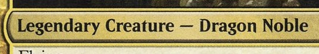
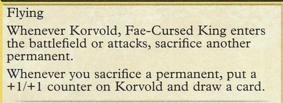
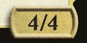
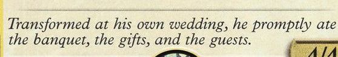
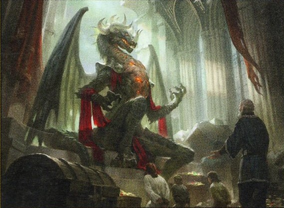
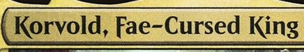
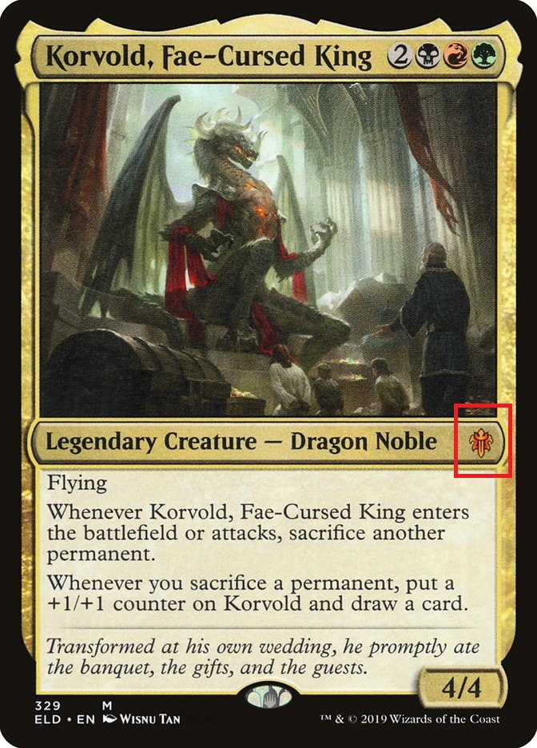
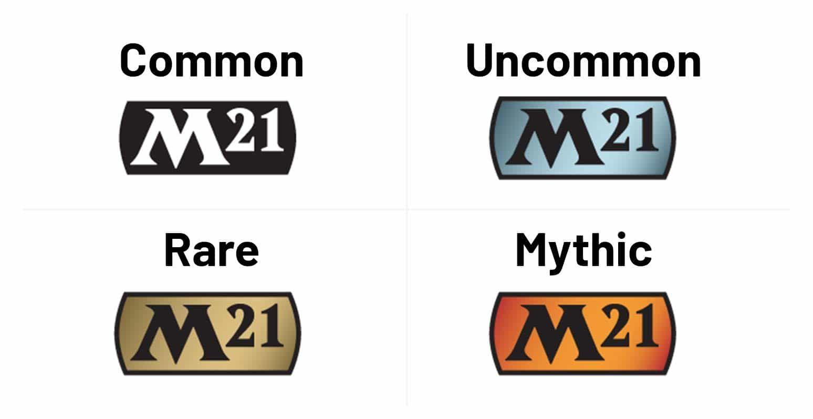

The best way to teach someone about Magic: The Gathering is to explain the anatomy of a magic card.
Every magic card has the same frame and pattern on it. So once you know the layout of one of them, you'll know the layout of all of them.
The card we are going to examine is a creature spell card called Korvold, Fae-Cursed King.
We're going to break this card down into bite sized chunks to help you in your understanding of Magic: The
Gathering.
1. Mana Cost
This is the most important part of every magic card. This is how much the card costs. You should always look
at the mana cost at the card before you look at anything else.
In this particular cost, we need one black mana, one red mana and one green mana.
The 2 in grey is generic mana, meaning any colour can be used to pay for the remaining two. So 2 of any
other colour can be used.
In total this spell costs 5 mana to cast. The way we would say this in magic, is that this spell has a
converted mana cost of 5 mana(1 black, 1 red, 1 green, and 2 or any other colour.).
Always be weary of the lands you have in hand and on the battlefield.
A good rule of thumb in any game of magic, is to keep an opening hand which has enough lands/mana sources to
cast everything in your hand. You want to be playing a land every single turn. Don't get distracted by those flashy big spells, hang on to those lands!
It's also worth noting that mana costs indicate colour identity. White cards have white mana costs (and
generic), blue cards have blue mana costs and so on and so forth.
But in Korvold, Fae-Cursed King you see that the card is distinctly gold. A gold card means that the card is
multi-coloured, meaning it is a black, red, and green card.
You may also find cards with 2 distinct colours. But they will not be red, they'll be the 2 colours in their mana cost.
Card colour can factor into a lot of spells so it's important to know what's the colour identity of a card.
In the singleton formats such as commander, that only cards of the same colour as your commanderare allowed
in your deck.

2. Card Type
This section tells us the type and sub-type of the card. In this example we have a legendary creature card,
with a sub-type of Dragon Noble. A card with the legendary type in it means that it represents a unique
person or object within the magic multi-verse.
Creature cards tend to have the most types and sub-types due to there being so many creature types in magic.
Other cards such as lands, can have their own types. Lands can be basic, land or even a specific basic such
as a forest swamp land sub-type.
Card types are often overlooked but it is important to note them as some spells will target a specific card
type and not others.
For instance, cards can search your library for forest cards, meaning you can take any land card with the
forest typing in it, which includes dual lands with a forest typing.

3. Rules Text
After mana cost and card type, this is THE most important part of the card. This is the rules text
and tells you what the card does, what its abilities are and anything else the card can do. Take your time
to read and understand this part of every card you draw! You'll find key words, symbols, and other rulings
in this section of the card.
One of the most common symbols (besides mana symbols) you'll find is the tap symbol .
This symbol means tap the card, and is used as a cost for an ability.
It can be preceeded by a mana symbol, meaning a mana cost and tapping are the costs required to fufil an action.
For example , means, pay one red mana and tap.
You'll find these are activation costs for abilities and cannot be countered.
The key to understanding any rules text is to remember to always do exactly what the card says. So if a creature cards rules text say that it is indestructible, this
means that any and all effects that could destroy it, won't.
But, there are ways around this. Effects that reduce a creatures toughness to 0 or less will result in it
dying and going to the graveyard.
So you can see why understanding all the text in this section is key to playing and winning magic.

4. Power & Toughness
This part of the card is only found on creature cards. On the left you have the creatures power, this is how
much damage it can deal. On the right is the creatures toughness, how much damage the creature can take
before it is destroyed.
When any creatures toughness is brought to 0 or lower it dies and is sent to the graveyard. Note that in combat
damage is dealt simaultaneously,
so the attacking creature deals damage at the exact same time as the defending creature does. So 2 creatures clashing in combat
with power toughness 2/2 will kill each other.
But a 2/2 vs a 4/4, will result in the 4/4 winning but his toughness will be reduced to 2 until the end of
the turn.
So there will be some math to do to fully grasp Magic: The Gathering!

5. Flavour Text
Flavour text is always found below the rules text and in italics. It can be a quote, a saying or a line from
a book. It's purpose is to contextualise or give some lore or background to a card. It's often tied to the
storyline from where the particular card comes from. In Korvold, Fae-Cursed King our flavour text is
referring to Korvold being cursed and turned from a human into a dragon.
Korvold is a minor character found in the Throne of Eldraine set and isn't as important to the story as this
card would have you believe.
But that's the thing about flavour text, it doesn't impact the game at all and comes down to taste and
personal preferance.
Flavour text can also have a good amount of easter eggs, from in-game references, to quoting real world
stories and poetry.

6. Artwork
This is the artwork which illustrates a card. It can be a representation of a creature, in this case a snippet of Korvold on his thrown.
It can also depict actions or settings relevant to a card. Wizards of the Coast commission hundreds of artist year round to do artwork for their cards.
Within the last few years, Wizards of the Coast has introduced cards in every set with alternate artwork or even expanded artwork.
Like flavour text these changes and alterations have no impact on actualy gameplay, but for some formats
such as commander you'll find people with decks full of alternate art or expanded art.
You can also comission your own artist to alter a specific card of your choosing to any artwork you would like!

7. Name
The name of the card, the easiest part of the card to wrap your head around. But be aware, some card names are absolute toungue twisters like
Asmoranomardicadaistinaculdacar from Modern Horizons 2!


8. Rarity Symbol
The rarity symbol signifies how rare the card is. This symbol also has a distinct design for every set.
Here we can see the symbol for Throne of Eldraine, the set where Korvold came from.
Korvold, Fae-Cursed King is a mythic rare card, so you know it is a pretty powerful card. Gold is rare, slightly less powerful but can still be pretty strong.
Blue-ish grey is uncommon, and black symbol is common. These 4 rarities are found across all released sets in Magic.
Again like flavour text, rarity has no impact on gameplay and only impacts the economics of the game.
Legendary cards will generally be uncommon and above in rarity, all planeswalker cards have the mythic
rarity.
Rarity will in general tell you how powerful a card is, so it's helpful to know about it.

 .
This symbol means tap the card, and is used as a cost for an ability.
It can be preceeded by a mana symbol, meaning a mana cost and tapping are the costs required to fufil an action.
For example
.
This symbol means tap the card, and is used as a cost for an ability.
It can be preceeded by a mana symbol, meaning a mana cost and tapping are the costs required to fufil an action.
For example  ,
,